// ГАЛЕРЕЯ
рваный боб(Кэйт Бланшетт)
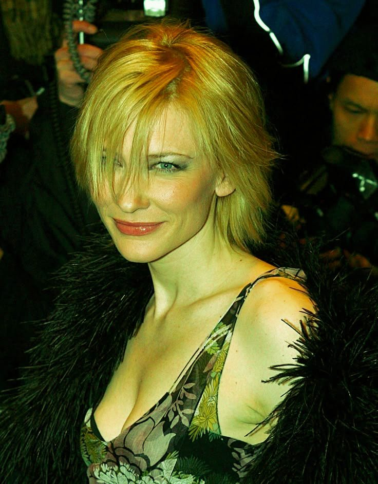
Шегги (Кетрин Мённинг)
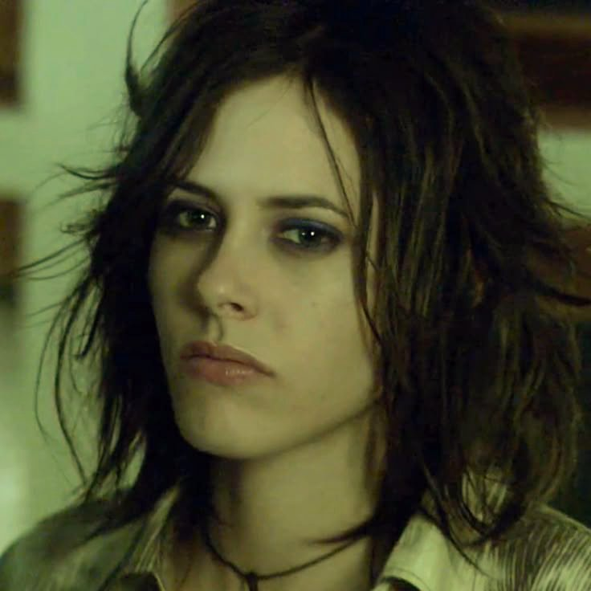
каскад (Эмма Дарси)
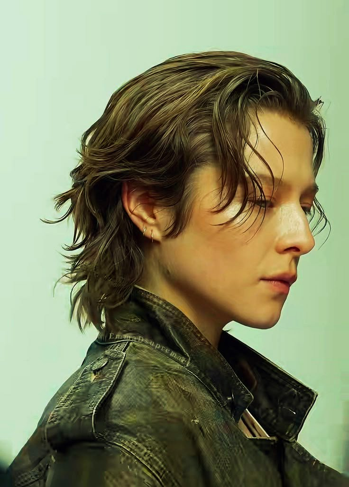
Маллет (Кристиан Стюарт)
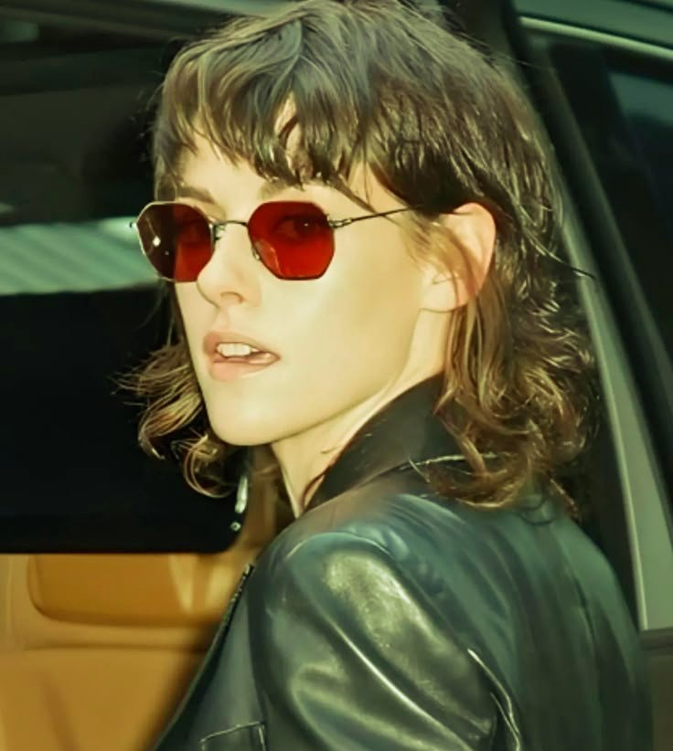
шегги (King princess)
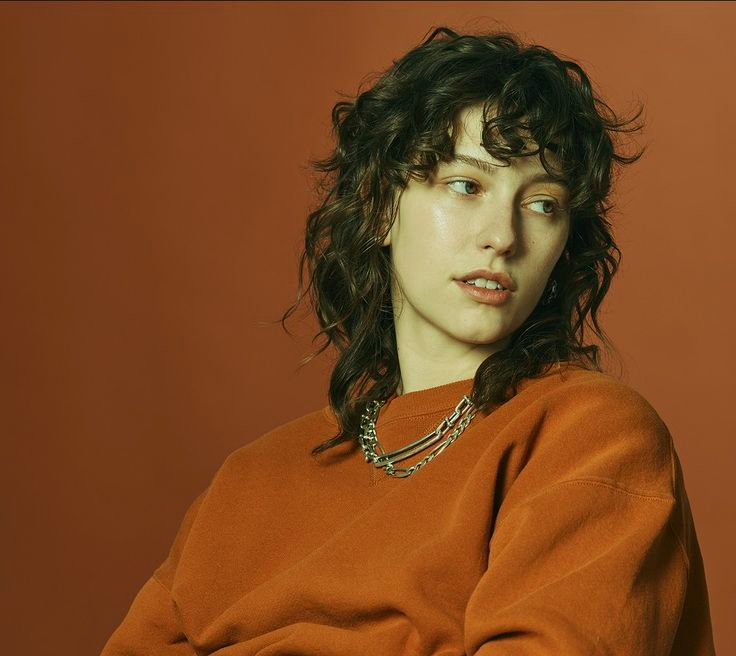
удлиненный шегги(Софи Тэтчер)
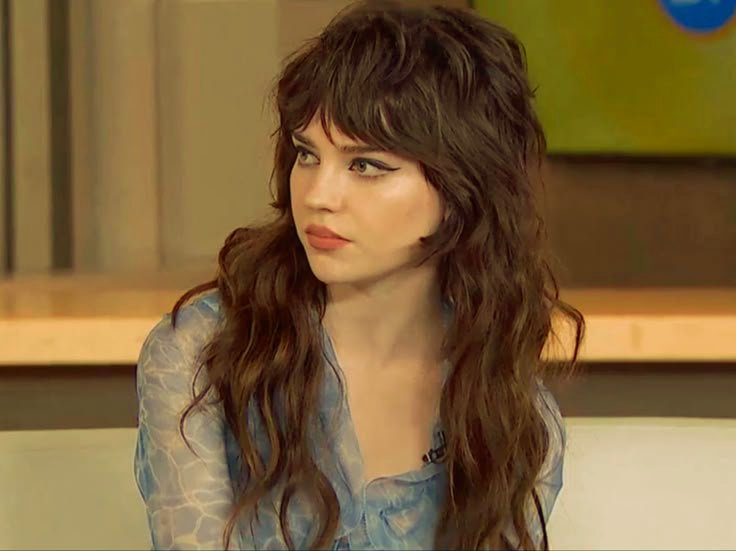
шуллет (Kitana)
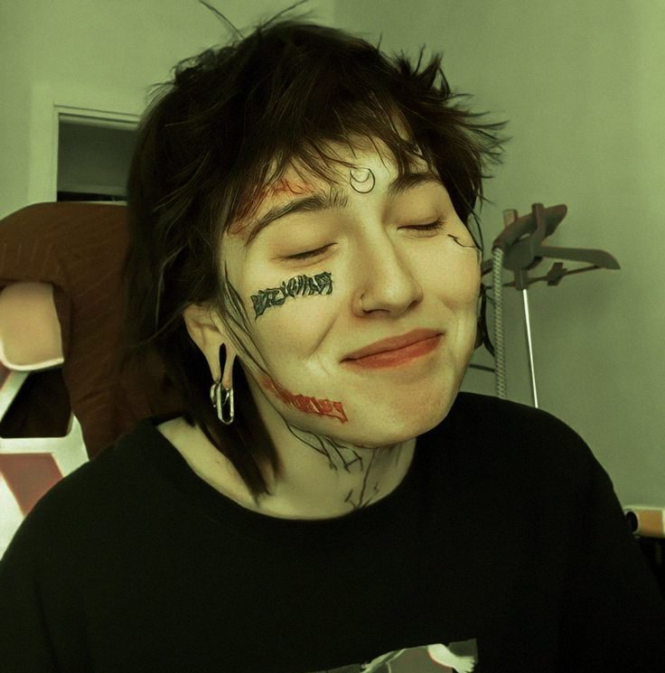
пикси (Элис)
modcut (Кетрин Мённинг)
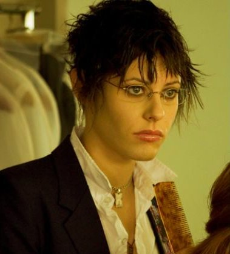
маллет (Девид Боуи)
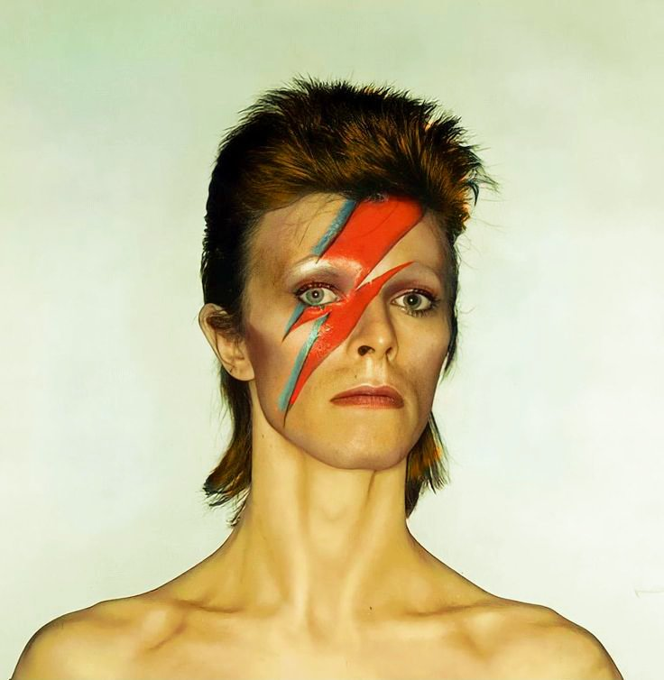
шегги (Том Йорк)
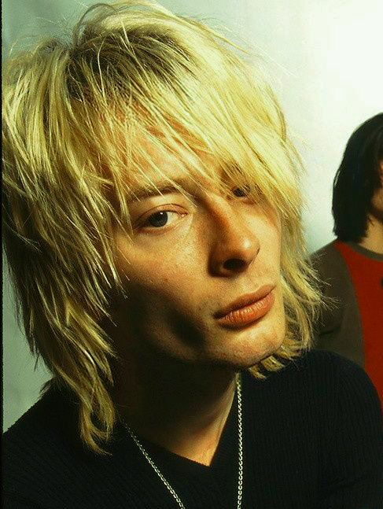
пикси (Вайнора Райдер)
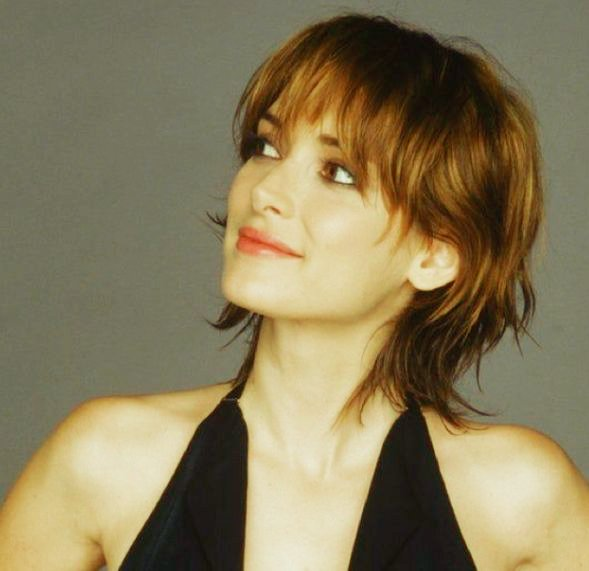
рваный пикси (Сэди Синк)
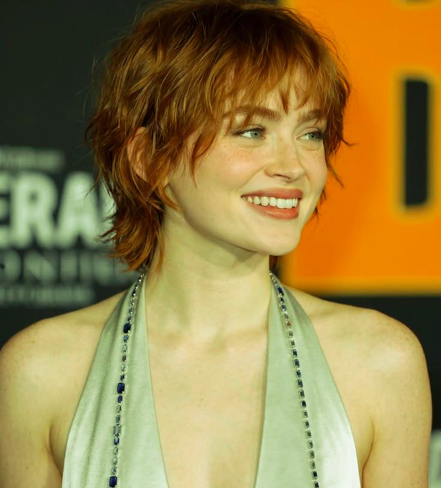
кроп (Юля Чикина)
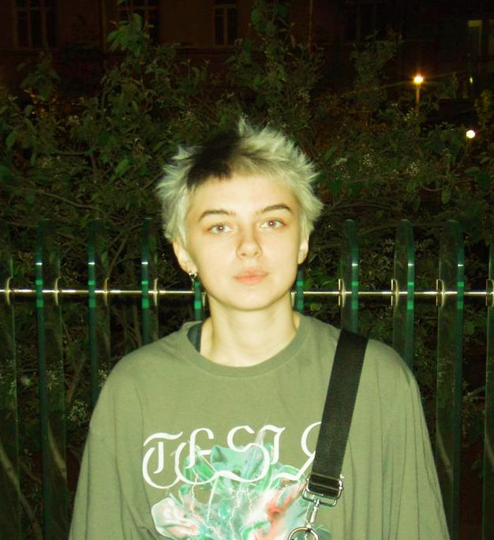
маллет (Джоан Джетт)

шегги (Руби Кпус)
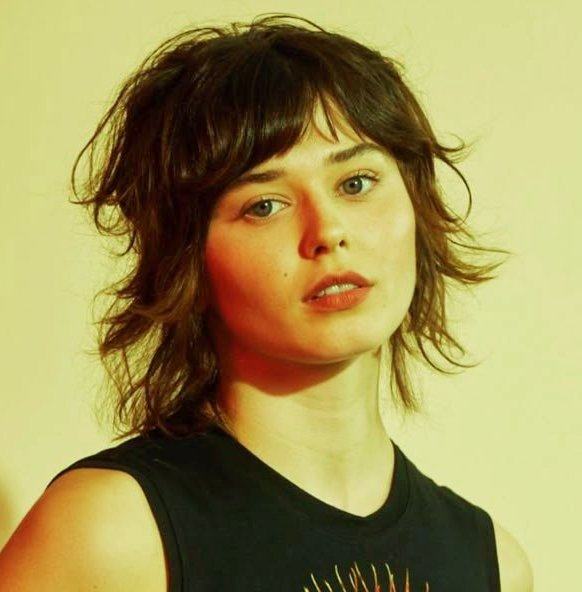
каскад (Джина Гершон)
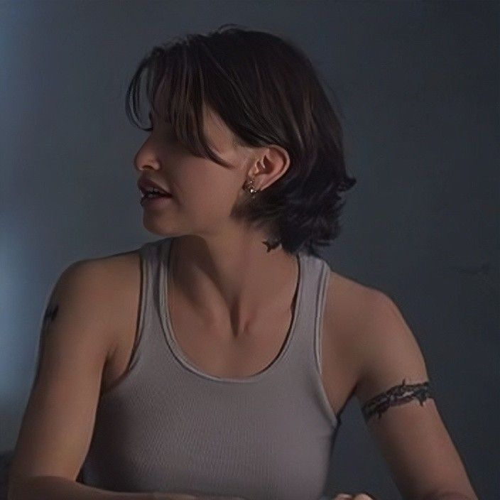
Маллет (Адель)
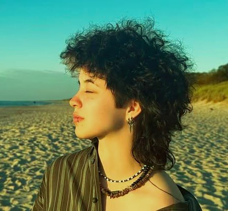
пикси
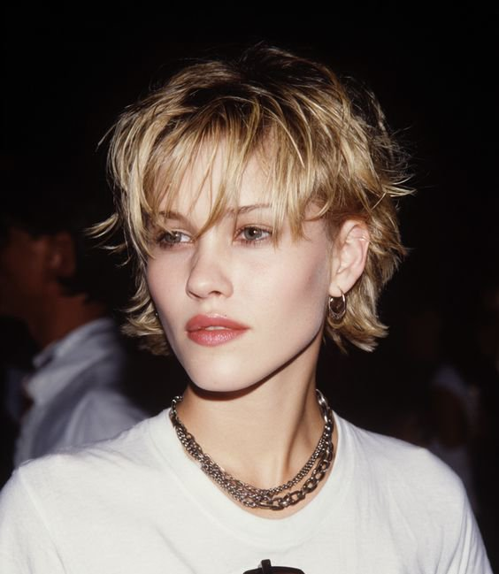
(Леа Сейду)
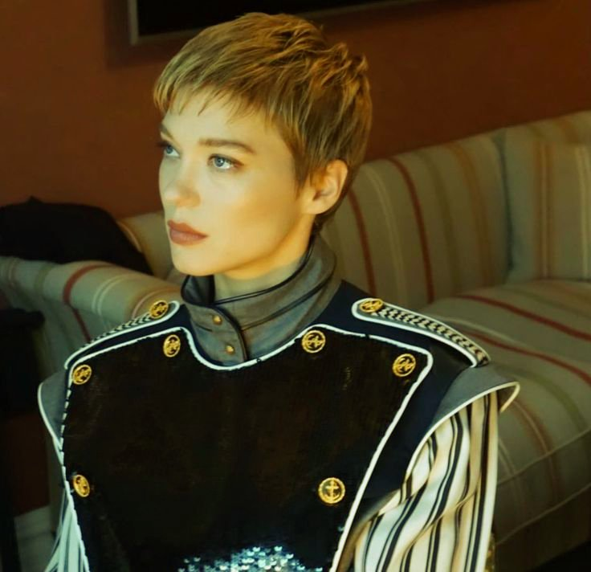